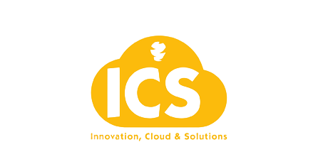

ICS
Innovation, Cloud & Solutions
Treinamento Dev + IA
Deck interativo HTML
Desenvolvimento assistido por IA com GitHub Copilot
Uma mudança prática de operação: o dev para de digitar tudo do zero e passa a pilotar contexto, revisar código e validar com testes.
Objetivo de negócio
Aumentar velocidade de entrega sem comprometer qualidade técnica.
Resultado esperado
Mais throughput por squad, PRs mais claras e menor retrabalho em QA.